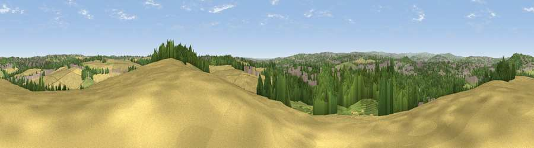

Viewpoint near Treeton
#19772 in England · top 26% of its area beats it · near TreetonWhere it is
The exact computed spot (SK 43925 88125). Click the marker for map links.
The view, rendered

A 360° render of this exact spot computed from the terrain model, tree cover and land cover — summer colours, afternoon light, calibrated against photographs of famous viewpoints. Real trees, hedges and buildings will differ in detail.
The panorama
Grey silhouette: terrain skyline in each direction (720 bearings, Earth curvature and refraction included). Dashed green: skyline with trees (+15 m) and buildings (+8 m) as obstacles. Blue strip: how far the ground is visible on each bearing.
Where the view opens
Wedge length = distance to the farthest visible ground on that bearing (vegetation-aware). Rings at 10, 25 and 50 km.
What fills the view
31% woodland · 27% cropland · 25% built-up · 16% grassland ·
Angular shares of the visible panorama (visual magnitude), not map area. Landscape diversity 0.61 (0–1 Shannon).
Key numbers
More beautiful places nearby
The staircase of upgrades: each row has a higher view potential than everything closer. Driving times are estimates from straight-line distance, calibrated against real road routing — check an actual route before setting out.
| Place | Direction | Drive | Score |
|---|---|---|---|
| Viewpoint near Treeton | ESE · 0 km | ~1 min | 52.8 |
| Viewpoint near Whiston | NNW · 3 km | ~7 min | 53.0 |
| Viewpoint near Rotherham | NNW · 4 km | ~8 min | 54.5 |
| Viewpoint near Ridgeway | SW · 7 km | ~14 min | 67.6 |
| Viewpoint near Maltby | ENE · 11 km | ~21 min | 70.7 |
| Viewpoint near Whitley | NW · 14 km | ~25 min | 72.1 |
| Viewpoint near Wharncliffe Side | NW · 15 km | ~27 min | 75.2 |
| Tissington Hill | SW · 46 km | ~66 min | 75.5 |
53.38815, -1.34102 · source: screening · position refined by local search. Computed location — check access rights before visiting.